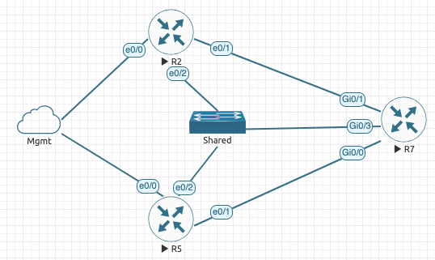
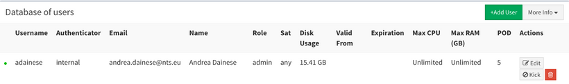
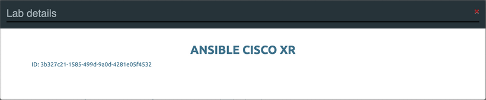
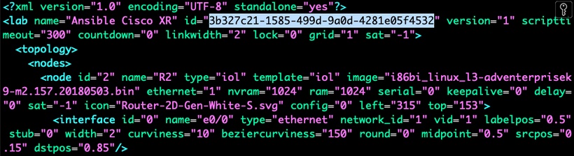
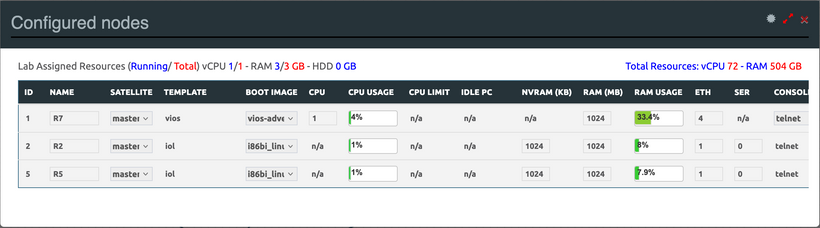
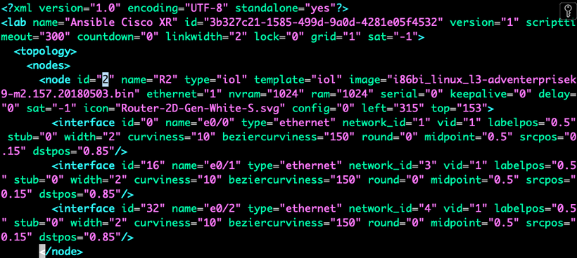
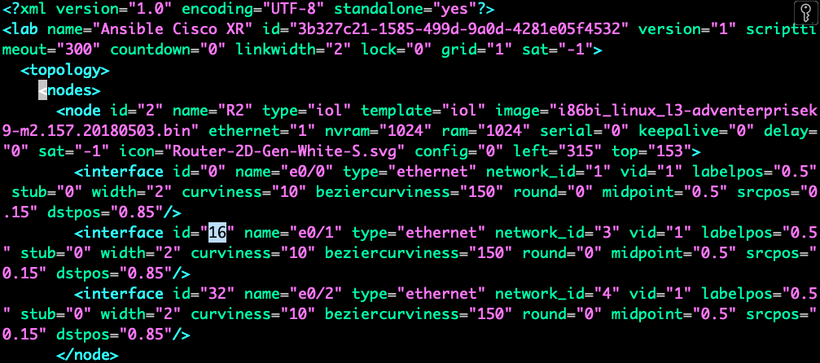
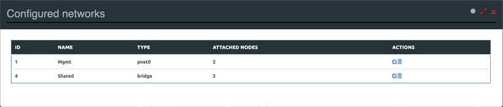
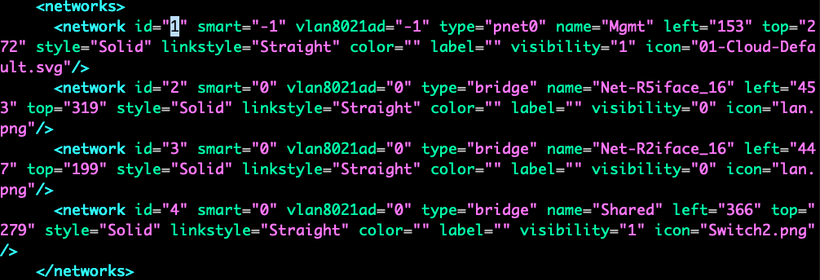

EVE-NG network interfaces explained¶

The network infrastructure that EVE-NG uses to interconnect lab nodes is somewhat obscure. Let's explore how to identify the Linux interfaces of each virtualized node for debugging or simple analysis.
Let's take the following lab as an example:

Required Information¶
Before we begin, we need the following data:
- User identifier (POD)
- Lab identifier
- Node identifiers to analyze
- Interface identifiers to analyze
- Network identifiers to analyze
- Execution space identifier
User Identifier (POD)¶
The user identifier is visible to an administrator under Management → User Management.

In this example, the POD assigned to my user is 5.
Lab Identifier¶
The lab identifier can be found by opening the lab and navigating to Lab Details.

For instance, my lab identifier is 3b327c21-1585-499d-9a0d-4281e05f4532.
If we open the lab file with a text editor, the identifier is the id attribute of the lab object.

Node Identifiers¶
Each node is identified by a number that can be viewed by opening the lab and navigating to Nodes.

If we open the lab file with a text editor, the identifier is the id attribute of the node object.

Interface Identifiers¶
Each interface is identified by a number, which can be viewed by opening the lab file with a text editor. The interface identifier is the id attribute of the interface object.

Each interface is associated with a network (network_id), which represents the network to which the interface is connected.
There is a key difference between QEMU and IOL node interfaces:
- QEMU node interfaces start from identifier
0and increment sequentially. - IOL node interfaces follow the formula:
ID = X + Y × 16whereXandYare the slot and interface identifiers present in theEthernetX/Yname.
Network Identifiers¶
Each network segment is identified by a number that can be viewed by opening the lab and navigating to Networks.

A network can be either a point-to-point link or a network object. A network object is an L2 network implemented by a Linux bridge rather than an EVE-NG node. In this view, only explicitly created networks will be displayed, while all point-to-point networks remain hidden.
If we open the lab file with a text editor, the identifier is the ID attribute of the network object.

The visibility flag determines if a network is visible from the web interface. For example, while four networks are present, only two are visible in the web interface:
- Network R2-R7 (
id=3) - Network R5-R7 (
id=2) - Shared Network (
id=4) - Mgmt Network (
id=1)
When creating a point-to-point link, the network name is set using the node name and source interface.
Execution Space Identifier¶
The execution space is represented by a number associated with an open lab. This number remains assigned until the lab is closed.
We can access the database using the following command with the password eve:
The execution space identifier can be retrieved via a database query, knowing the lab ID
mysql> SELECT * FROM lab WHERE uuid="3b327c21-1585-499d-9a0d-4281e05f4532";
+----+--------------------------------------+---------------+-----------------+-----+
| id | uuid | path | name | pod |
+----+--------------------------------------+---------------+-----------------+-----+
| 3 | 3b327c21-1585-499d-9a0d-4281e05f4532 | /Users/Andrea | Ansible Cisco XR | 5 |
+----+--------------------------------------+---------------+-----------------+-----+
In our case, the execution space identifier is 3.
Node Interfaces¶
At this point, we have all the necessary values to identify the interfaces in our system. Each interface is constructed as follows: vunAAABBBBCCCDD
Where:
AAA: Decimal execution space identifierBBBB: Decimal POD identifierCCC: Decimal node identifierDD: Hexadecimal interface identifier
The first interface of node R2 in our lab (execution space 3, POD 5) has the prefix: vun0030005002
$ ifconfig | grep vun0030005002
vun003000500200: flags=4163<UP,BROADCAST,RUNNING,MULTICAST> mtu 9000
vun003000500210: flags=4163<UP,BROADCAST,RUNNING,MULTICAST> mtu 9000
vun003000500220: flags=4163<UP,BROADCAST,RUNNING,MULTICAST> mtu 9000
vun003000500230: flags=4163<UP,BROADCAST,RUNNING,MULTICAST> mtu 9000
Since R2 is an IOL node, its interfaces are 0, 16 (0x10), 32 (0x20), and 64 (0x30)**.
Each interface can be part of a network implemented via a Linux bridge. Linux bridges are structured as follows: vnetAAABBBBEEEE
Where:
AAA: Decimal execution space identifierBBBB: Decimal POD identifierEEE: Decimal network identifier
The network in our lab (execution space 3, POD 5, ID 4) is named: vnet00300050004
$ brctl show vnet00300050004
bridge name bridge id STP enabled interfaces
vnet00300050004 8000.de24a99b6dc2 no vun003000500103
vun003000500220
vun003000500520
This network contains three interfaces:
vun003000500103: Execution space 3, POD 5, node 1 (R7, QEMU), interface0x3(Gi0/3)- vun003000500220: Execution space 3, POD 5, node 2 (R2, IOL), interface
0x20(32,Eth0/2) - vun003000500520: Execution space 3, POD 5, node 5 (R5, IOL), interface
0x20(32,Eth0/2)